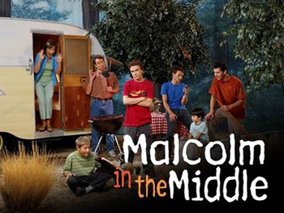
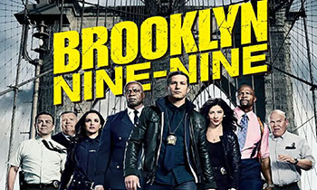
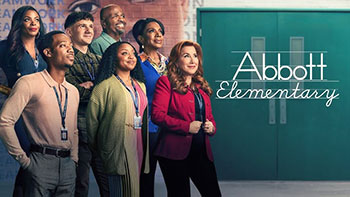
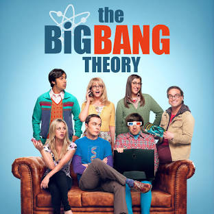

5 Must Watch Sitcoms
Malcolm in the Middle
The Cleavers they ain't. Mom is a screaming control freak, Dad is a goofy human hairball, oldest son Francis escaped the family at a young age, Reese is just criminal, Dewey is a space cadet and young Jamie is the scapegoat. The middle kid, Malcolm (who delivers the narrative for the capers of this whacked-out clan) is a brainiac who doesn't want to be burdened by his genius.
Brooklyn 99
Detective Jake Peralta, a talented and carefree cop with the best arrest record, has never had to follow the rules too closely or work very hard. That changes when Ray Holt, a man with a lot to prove, becomes the new commanding officer of Brooklyn's 99th precinct. As Holt reminds Peralta to respect the badge, an extremely competitive colleague - Detective Amy Santiago - starts to close in on the hotshot cop's arrest record. Other members of the precinct include Sgt Terry Jeffords, a devoted family man, Detective Charles Boyle, a hard worker who idolizes Jake, and Rosa Diaz, a sexy-yet-intimidating detective. Civilian office manager Gina Linetti is tasked with cleaning up everyone's mess, while somehow getting involved in everyone's business.
Abbott Elementary
A group of dedicated, passionate teachers -- and a slightly tone-deaf principal -- find themselves thrown together in a Philadelphia public school where, despite the odds stacked against them, they are determined to help their students succeed in life. Though these incredible public servants may be outnumbered and underfunded, they love what they do -- even if they don't love the school district's less-than-stellar attitude toward educating children.
Modern Family

Told from the perspective of an unseen documentary filmmaker, the series offers an honest, often-hilarious perspective of family life. Parents Phil and Claire yearn for an honest, open relationship with their three kids. But a daughter who is trying to grow up too fast, another who is too smart for her own good, and a rambunctious young son make it challenging. Claire's dad, Jay, and his Latina wife, Gloria, are raising two sons together, but people sometimes believe Jay to be Gloria's father. Jay's gay son, Mitchell, and his partner, Cameron, have adopted a little Asian girl, completing one big -- straight, gay, multicultural, traditional -- happy family.
The Big Bang Theory
Mensa-fied best friends and roommates Leonard and Sheldon, physicists who work at the California Institute of Technology, may be able to tell everybody more than they want to know about quantum physics, but getting through most basic social situations, especially ones involving women, totally baffles them. How lucky, then, that babe-alicious waitress/aspiring actress Penny moves in next door. Frequently seen hanging out with Leonard and Sheldon are friends and fellow Caltech scientists Wolowitz and Koothrappali. Will worlds collide? Does Einstein theorize in the woods?